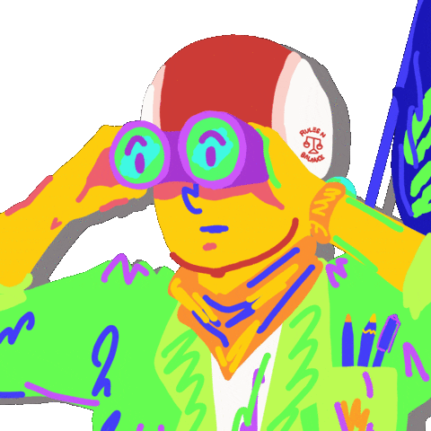

background 속성
- background-color: 배경색 단색으로 설정(red, blue, rgb코드)
- background-image: 배경색을 이미졸 설정 > url(이미지 파일명)
- background-repeat: 배경 이미지 반복 여부 설정 (no-repeat, repeat-x, repeat-y)
- background-position: 배경 이미지의 위치 설정 (left, center, right, top, middle, bottom, %백분율)
- background-attachment: 배경 이미지 고정 설정 (fixed, scroll)
- background-size: 배경이미지 크기 설정
여러 줄 만들기
여러 줄 만들기
여러 줄 만들기
여러 줄 만들기
여러 줄 만들기
